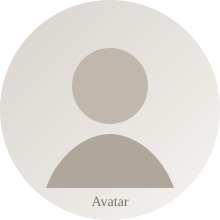

About
I've always liked stories. For me, data science is a way of finding the truth hidden inside a mess of numbers. I operate at the intersection of data and engineering — student, engineer, and relentless troubleshooter.
I enjoy the logic puzzle of system design: stitching together infrastructure that supports real products. I'm looking for a team where I can ask a million questions, solve hard problems, and keep learning.
Recent posts
See all
Projects
See all
Real-Time Fraud Detection Pipeline
6K events/sec, sub-100ms latency, automated drift monitoring.
RAG-based Chatbot for Document QA
LLAMA + structured citations for precise retrieval.
Language Model from Scratch
22M-parameter Transformer in PyTorch with custom tokenization.